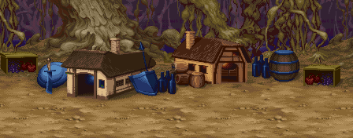

| |
|
|
| |
|
| |
|
| |
상점 기본 정보
20초의 제한시간이 주어집니다. 20초가 지난다면 강제로 상점을 나가게 됩니다.
A버튼으로 물품을 구입하거나 아이템칸의 아이템을 집어서 버릴 수 있습니다.
상점주인을 A버튼으로 클릭할 경우 정보/대화를 들을 수 있습니다.
'EXIT'라고 씌여져 있는 팻말을 A버튼으로 클릭하면 상점을 나갑니다.
B버튼을 누른 채로 커서를 조작하면 빠르게 움직일 수 있습니다.
C버튼/D버튼으로 파티원에게 돈을 건내 줄 수 있습니다. C버튼은 10sp씩, D버튼은 100sp씩 건내줍니다.
(돈을 건내주려는 플레이어와 커서를 겹친 상태에서 건내줄 수 있습니다.) |
|
| |
아이템 정렬 순서
아이템 구입시 1 → 2 → 3 → 4 → 5 → 6의 순서로 채워집니다.
필드상에서 아이템 칸의 회전방향과 반대방향으로 채워지니 아이템 구입시 참고하시기 바랍니다.
예를 들면 1, 2번 칸이 비어 있을때 쓰로잉 해머를 사용한 후 바로 LB오일을 사용하고 싶다면
LB오일-해머 순으로 구입해야 하고 1, 6번 칸이 비어 있다면 해머-LB오일 순으로 구입해야 합니다. |
|
| |
※ 영어문법이 엉망인 문장이 꽤 많습니다. 따라서 적당히 의역을 했으니 이점 참고하시기 바랍니다.
문제는 북미 버전이나 유럽 버전도 저런 엉터리 문장 그대로 썼다는 건데... |
|
| |
| 첫번째 상점 - 스테이지 3 (져거노트/베수비아 강) 클리어 후 |
|
최초로 방문하게 되는 상점.
왼손에 어슴푸레 보이는 반지는 이 여성이 유부녀 아닌가 하는 추측을 하게 만든다.
⊙ 아이템 구입 가격
화살 40sp 쓰로잉 해머 30sp 단검 20sp 버닝 오일 20ps 힐링 포션 100sp
※ 포션은 구입할 수 있는 수량에 제한이 있습니다.
1인 플레이시 2개 / 2인 플레이시 3개 / 3인 플레이시 4개 / 4인 플레이시 5개
이 내용은 모든 상점에 해당 됩니다.
⊙ 얻을 수 있는 정보 (얼굴을 클릭 할 경우)
"Dwarves may find treasure even if it looks like an empty treasure box."
"드워프는 빈것 처럼 보이는 상자에서도 보물을 발견 할 수 있습니다."
- 드워프로 상자를 개봉한 후 잠시 남아있는 상자를 부수면 아이템이 나오는 것을 말합니다.
⊙ 기타 대화 (얼굴 이외의 곳을 클릭 할 경우)
"Don't touch me!"
"만지지 마세요!"
※ 아이템 교환
'아울베어의 알(egg of owlbear)'을 가지고 있을 경우 대화를 하면 '이상한 알(egg of wonder)'로 바꿔줍니다.
- 대화 내용
"You have Egg of the Owlbear. I'll exchange it for Egg of Wonder."
"아울베어의 알을 가지고 있군요. 이상한 알(egg of wonder)로 바꿔 드리겠습니다." |
|
| go to Top |
| 두번째 상점(A) - 스테이지 5-A (절망의 숲) 클리어 후 |
|
스테이지상의 쉐도우 엘프는 플레이어와 적대적 관계로 등장하지만
뜻밖에도 쉐도우 엘프 아가씨가 상점주인으로 나온다.
대화를 들어보면 약간 공주병이 있는 것 같기도......
⊙ 아이템 구입 가격
화살 42sp 쓰로잉 해머 32sp 단검 25sp 버닝 오일 25ps 힐링 포션 130sp
⊙ 얻을 수 있는 정보 (얼굴을 클릭 할 경우)
"I heard only one who serves an immortal can release the curse."
"불멸의 존재를 섬기는 자만이 저주를 풀 수 있다고 들었습니다."
- 클레릭으로 ' 저주의 검 2'를 8번 집었다 놓을 경우 저주가 풀리는 것을 말합니다.
"Do you find me beautiful?"
"저의 아름다움을 발견했나요?"
⊙ 기타 대화 (얼굴 이외의 곳을 클릭 할 경우)
"............"
※ 아이템 교환
'비홀더의 눈(eye of beholder)'을 가지고 있을 경우 대화를 하면 부유 신발(boots of levitation)'을 만들어 줍니다.
- 대화 내용
"You have the Eye of a Beholder. I can make the Levitation Boots with it."
"비홀더의 눈을 가지고 있군요. 그것으로 부유 신발을 만들 수 있습니다."
"With Levitation Boots, you can walk in the air."
"부유 신발이 있으면 허공을 걸어다닐 수 있습니다." |
|
| go to Top |
| 두번째 상점(B) - 스테이지 5-B (아인슨 마을) 클리어 후 |
|
모든 상점 주인중 가장 어려보이는 소녀. 유일하게 스테이지 상에서도 등장한다.
⊙ 아이템 구입 가격
화살 42sp 쓰로잉 해머 32sp 단검 25sp 버닝 오일 25ps 힐링 포션 130sp
⊙ 얻을 수 있는 정보 (얼굴을 클릭 할 경우)
"If thief dashes against an enemy, they may drop some useful items."
"시프가 적들에게 돌진한다면 적들은 쓸만한 아이템을 떨어뜨릴 수도 있습니다."
- 시프의 '픽 포켓'을 말합니다.
⊙ 기타 대화 (얼굴 이외의 곳을 클릭 할 경우)
"I'm not for sale!"
"저는 판매용이 아닙니다!"
※ 특별 이벤트?
첫번째 숨겨진 방 안쪽 방에서 울면서 서성이고 있는 소녀를 구해 줄 경우 물건 가격을 깍아줍니다.
그 소녀가 이 상점 주인인듯 합니다.
ps. 전작 TOD에서도 비슷한 상점 소녀 이벤트가 있는데 거기선 구출 해 주지 않았을 경우 사망한 것으로 나왔었습니다.
|
바로 이 소녀 |
- 할인 가격
화살 22sp 쓰로잉 해머 16sp 단검 12sp 버닝 오일 12ps 힐링 포션 80sp
- 추가 대화
"Oh it's you the bold hero who saved me the other day. "
"아 전에 저를 구해 줬던 용감한 영웅이 당신이군요."
"I cannot thank you enough for what you did me."
"지금은 그에 대한 답례를 충분히 해 드릴 수가 없네요."
"Next time you're here, I'll make you a special home cooked meal."
"다음에 또 오신다면 제가 특별한 요리를 만들어 드릴께요"
- 세번째 문장을 그대로 해석하면 "다음에 당신이 여기 있다면, 난 당신을 '특별한 가정요리'로 만들것이다"........ |
|
| go to Top |
| 두번째 상점(C) - 스테이지 5-C (숲의 다리) 클리어 후 |
|
유유자적한 생활을 하는 듯한 엘프 아저씨. 엘프가 있어야 올 수 있으니 만나보기 좀 힘들지도.
'젊었을 때'를 운운하는 것으로 보아 몇백년을 살았을런지도 모르겠다.
⊙ 아이템 구입 가격
화살 42sp 쓰로잉 해머 32sp 단검 25sp 버닝 오일 25ps 힐링 포션 130sp
⊙ 얻을 수 있는 정보 (얼굴을 클릭 할 경우)
"Monsters born from an Egg of Wonder will fight for the owner of the egg."
"이상한 알(egg of wonder)에서 태어난 괴물은 그 알의 소유주를 위해 싸웁니다."
⊙ 기타 대화 (얼굴 이외의 곳을 클릭 할 경우)
"If I were younger I would slay the dragon."
"내가 조금만 더 젊었으면 드래곤 따위는 가볍게 물리쳤을 겁니다."
"............"
"I have to do it. but I have to go now please be careful."
"그러면 ... 아쉽긴 해도 조심해서 가세요."
- 도저히 해석 불가능이라 일본판으로 해석을 했습니다. |
|
| go to Top |
세번째 상점 - 스테이지 7 (파괴의 숲) 클리어 후
※ 이곳에서 부터 은화살/은단검/LB오일/슈퍼 힐링 포션을 판매하기 시작합니다.
|
|
하플링으로 추정되는 상점 주인.
이 양반이 교환 해주는 아이템이 상당히 중요하기 때문에 대화는 거의 필수.
⊙ 아이템 구입 가격
은화살 80sp 쓰로잉 해머 35sp 은단검 50sp LB오일 50ps 슈퍼 힐링 포션 200sp
⊙ 얻을 수 있는 정보 (얼굴을 클릭 할 경우)
"the Eye of a Displacer Beast will help when searching hidden rooms."
"숨겨진 방을 찾을 때 디스플레이서 비스트의 눈이 도움이 될겁니다."
- ...그러나 전혀 도움이 되지 않습니다.
⊙ 기타 대화 (얼굴 이외의 곳을 클릭 할 경우)
"Excuse me?"
"실례하지만...?"
※ 아이템 교환
'D.비스트의 가죽(skin of displacer beast)'을 가지고 있을 경우 대화를 하면
디스플레이서 클록(displacer cloak)'을 만들어 줍니다.
- 대화 내용
"You have the skin of a D.beast. I can make the Displacer Cloak with it."
"디스플레이서 비스트의 가죽을 가지고 있군요. 그것으로 디스플레이서 클록을 만들 수 있습니다."
"With a Displacer cloak you'll take little damage from ranged weapons."
"디스플레이서 클록이 있으면 장거리 무기에 대한 피해를 거의 입지 않을 것 입니다."
※ 정보 제공?
'만티코어의 가죽(skin of manticore)'을 가지고 있을 경우 대화를 하면 정보를 줍니다.
- 대화 내용
"I can give you valuable infomation for your Manticore skin."
"만티코어 가죽을 가지고 있으니 유용한 정보를 주겠습니다."
"With a Displacer cloak you'll take little damage from ranged weapons."
"디스플레이서 클록이 있으면 장거리 무기에 대한 피해를 거의 입지 않을 것 입니다."
"the Eye of a Displacer Beast will help when searching hidden rooms."
"숨겨진 방을 찾을 때 디스플레이서 비스트의 눈이 도움이 될겁니다."
- 결국 만티코어의 가죽은 전혀 도움이 안된다는 결론이 나옵니다. |
|
| go to Top |
네번째 상점(A) - 스테이지 8-A (미로의 숲) 클리어 후
|
|
한창 때 한가닥 했을 것 같은 분위기를 풍기는 과묵한 애꾸눈 아저씨. 목소리도 터프하다.
⊙ 아이템 구입 가격
은화살 85sp 쓰로잉 해머 35sp 은단검 55sp LB오일 55ps 슈퍼 힐링 포션 250sp
⊙ 얻을 수 있는 정보 (얼굴을 클릭 할 경우)
"............"
⊙ 기타 대화 (얼굴 이외의 곳을 클릭 할 경우)
"............"
※ 아이템 교환
'드래곤의 비늘(scale of dragon)'를 가지고 있을 경우 상점 주인에게 말을 걸면
드래곤의 방패(dragon shield)'를 만들어 줍니다.
매직 유저, 시프의 경우 디스플레이서 클록(displacer cloak)'을 만들어 줍니다.
- 대화 내용
"You have Dragon Scales!. I can make the strongest shield with them."
"드래곤의 비늘을 가지고 있군요! 그것으로 가장 강력한 방패를 만들 수 있습니다."
※ 상점을 나갈 때
라파엘의 동굴을 지나갈 수 있게 해주는 '부유석'을 건내줍니다.
- 대화 내용
"So you're going to the cave of Rafael? Then take this with you."
"그래서 결국 라파엘의 동굴로 가는 군요? 그럼 이걸 가져가세요."
"It is called 'floating stone' and will make you float in the air."
"'부유석'이라 불리는 건데 당신을 공중에 뜨게 해 줄겁니다." |
|
| go to Top |
네번째 상점(B) - 스테이지 8-B (놈 마을 구출) 클리어 후
|
|
놈(Gnome)...이겠지만 실제 룰상에서는 이렇게 작지는 않다......(오히려 하플링보다는 크다.)
작아서 그런지 목소리도 아주 가늘다.
⊙ 아이템 구입 가격
은화살 85sp 쓰로잉 해머 35sp 은단검 55sp LB오일 55ps 슈퍼 힐링 포션 250sp
⊙ 얻을 수 있는 정보 (얼굴을 클릭 할 경우)
대사가 없습니다.
⊙ 기타 대화 (얼굴 이외의 곳을 클릭 할 경우)
대사가 없습니다.
※ 상점을 나갈 때
라파엘의 동굴을 지나갈 수 있게 해주는 '부유석'을 건내줍니다.
- 대화 내용
"So you're going to the cave of Rafael? Then take this with you."
"그래서 결국 라파엘의 동굴로 가는 군요? 그럼 이걸 가져가세요."
"It is called 'floating stone' and will make you float in the air."
"'부유석'이라 불리는 건데 당신을 공중에 뜨게 해 줄겁니다." |
|
| go to Top |
※ 특별 상점 - 놈(Gnome) 마을 내부
|
|
어떤 종족인지 궁금증을 유발하는 말이 거의 없는 아가씨.
귀로 봐서는 엘프인것도 같은데 저렇게 작은 집에 있는 걸로 봐서는 아닌것도 같고......
모든 상점 중에서 유일하게 반지류, 완드류, 무기류의 구입이 가능합니다.
|

놈 마을의 전경 |
놈 마을의 왼쪽 건물이 바로 이 상점 입니다. 그런데 바로 들어가려고 하면 잠겨 있다고 나옵니다.
먼저 우측 건물을 방문한 다음에 좌측 건물로 들어가야 상점이 열립니다.
제한 시간이 마을에 들어서자 마자 흘러가기 시작하니 조금은 빠르게 행동하는게 좋습니다.
⊙ 완드류 구입 가격 - 왼쪽 패널을 클릭하면 목록이 나옵니다.
마비 완드 800sp 파이어 볼 완드 1200sp 콜드 완드 1200sp 라이트닝 볼트 완드 1200sp
※ 보통 완드는 20회 충전이 되어 있지만 이곳의 완드를 255회 충전되어 있는 상태로 만들 수 있습니다.
각 해당완드를 처음에 주어지는 것을 전부 소비한 후 여기까지 한번도 줍지 않은 상태에서 구입하면 됩니다.
라이트닝 완드는 중간에 컨티뉴하지 않는 한 처음에 주어지는 것이 없으니 도중에 줍지 않으면 됩니다.
마비완드는 255회 충전상태를 만들 수 없습니다.
⊙ 무기류 구입 가격 - 중간 패널을 클릭하면 목록이 나옵니다.
바스타드 소드 1500sp 워 해머 2500sp 투 핸디드 소드 6000sp 모닝 스타 8000sp
※ 처음 패널을 열면 바스타드 소드와 워해머만 목록에 나옵니다.
배경의 벽에 걸려있는 모닝스타와 투 핸디드 소드를 클릭해야 목록에 추가가 됩니다.
⊙ 반지류 구입 가격 - 오른쪽 패널을 클릭하면 목록이 나옵니다.
CSW 반지 1000sp 라이트닝 볼트 반지 500sp 파이어 볼 반지 400sp 컨티뉴얼 라이트 반지 500ps
※ 각 반지를 3개 가량 구입하면 물량이 떨어진 것으로 나옵니다.
그럴때는 리스트를 닫았다가 다시 열면 됩니다.
⊙ 얻을 수 있는 정보 (얼굴을 클릭 할 경우)
"Excuse me?"
"실례 하지만...?"
⊙ 기타 대화 (얼굴 이외의 곳을 클릭 할 경우)
"............" |
|
| go to Top |
다섯번째 상점 - 레드 드래곤을 물리쳤을 경우에만 들를 수 있습니다.
|
|
종족, 성별을 구별하기 참 어려운 상점 주인. 배경에 떠 있는 달은 꽤 운치가 있다.
⊙ 아이템 구입 가격
은화살 85sp 쓰로잉 해머 35sp 은단검 55sp LB오일 55ps 슈퍼 힐링 포션 275sp
⊙ 얻을 수 있는 정보 (어느 곳을 클릭하든 같습니다.)
"Your name will live forever among the great dragon slayers."
"당신의 이름은 위대한 드래곤 슬레이어들 사이에서 영원히 살아 있을 것 입니다."
- 게임 오버 후 나오는 스코어 랭킹에 드래곤 슬레이어의 표식인 드래곤 그림이 붙어서 나옵니다.
※ 아이템 교환
드래곤의 뿔(horn of dragon)을 가지고 있을 경우 드래곤 슬레이어(dragon slayer)를 만들어 줍니다.
매직 유저의 경우 마력의 지팡이(staff of magical power)를,
클레릭의 경우 뱀의 지팡이(staff of snake)를 만들어 줍니다.
- 대화 내용
"You have the Horn of a Dragon! I'll make the strongest sword with it."
"드래곤의 뿔을 가지고 있군요! 가장 강력한 검을 만들어 드리겠습니다." |
|
| go to Top |
여섯번째 상점(A) - 스테이지 9-A (화염의 대지) 클리어 후
|
|
이전에 나온 상점 주인과 동인 인물일런지......?
이 양반이 하는 이야기는 참 묘한 여운(?)을 남긴다.
⊙ 아이템 구입 가격
은화살 90sp 쓰로잉 해머 45sp 은단검 65sp LB오일 60ps 슈퍼 힐링 포션 300sp
⊙ 얻을 수 있는 정보 (얼굴을 클릭 할 경우)
"If you're equipped with the Rod, magic using fire, ice or lightning will become more powerful."
"로드를 착용했다면 파이어, 아이스, 라이트닝 속성의 마법이 더욱 강력해 질 것 입니다."
⊙ 기타 대화 (얼굴 이외의 곳을 클릭 할 경우)
"Please don't stare at me. It makes me feel uneasy."
"저를 뚫어지게 쳐다보지 마세요. 어색 해 집니다."
- 뭐라 말하기 힘들어지는 분위기를 자아내는 대사... |
|
| go to Top |
여섯번째 상점(B) - 스테이지 9-B (잃어버린 세계) 클리어 후
|
|
이전의 쉐도우 엘프 아가씨를 능가하는 공주병 아가씨.
⊙ 아이템 구입 가격
은화살 90sp 쓰로잉 해머 45sp 은단검 65sp LB오일 60ps 슈퍼 힐링 포션 300sp
⊙ 얻을 수 있는 정보 (얼굴을 클릭 할 경우)
"Baby Owl Bears will fight for the owner of their eggs."
"새끼 아울베어는 알의 소유주를 위해 싸웁니다."
⊙ 기타 대화 (얼굴 이외의 곳을 클릭 할 경우)
"I believe that someday a brave, man will apear, he'll defeat the monsters."
"전 언젠가 용감한 분이 나타나서 괴물들을 무찌를거라 믿어요."
"He'll ride up to me on a white house, and stretch out his hand."
"그 분은 저에게 손을 뻗어서 백마에 태울거에요."
"Then he'll kiss me and... What's the master? Am I boring you?"
"그리고 저에게 키스를 하고...무슨 문제라도? 제가 지루하게 만들어 드렸나요?"
- house와 master 라니... |
|
| go to Top |
여섯번째 상점(C) - 스테이지 9-C (드워프 지하동굴) 클리어 후
|
|
모든 상점 주인 중 만나 볼 일이 가장 드문 상점주인이 아닐까 싶다.
드워프가 있어야 올 수 있는데다가 쉽지 않은 텔'아린 형제를 거쳐와야 하니......
⊙ 아이템 구입 가격
은화살 90sp 쓰로잉 해머 45sp 은단검 65sp LB오일 60ps 슈퍼 힐링 포션 300sp
⊙ 얻을 수 있는 정보 (얼굴을 클릭 할 경우)
"You can exchange a medal with anything you want."
"메달을 어떤 것이든지 당신이 원하는 것과 교환할 수 있습니다."
⊙ 기타 대화 (얼굴 이외의 곳을 클릭 할 경우)
"When will these tragedies come to end?"
"언제가 되야 이 비극에 끝이 올까요?"
"War makes nothing suffering. when will we be able to live in peace again?"
"전쟁은 고통만을 가져올 뿐 입니다. 다시 평화롭게 살 수 있을 날은 언제일까요?" |
|
| go to Top |
일곱번째 상점 - 스테이지 10-3 (아레나) 클리어 후
|
|
적들의 본거지에서 그들의 '적'에게 아이템을 파는 여러모로 수상한 상점 주인.
⊙ 아이템 구입 가격
은화살 95sp 쓰로잉 해머 45sp 은단검 65sp LB오일 65ps 슈퍼 힐링 포션 325sp
⊙ 얻을 수 있는 정보 (얼굴을 클릭 할 경우)
"............"
⊙ 기타 대화 (얼굴 이외의 곳을 클릭 할 경우)
"............" |
|
| go to Top |
여덟번째 상점 - 스테이지 10-4 (아레나 재방문) 클리어 후
|
|
이 아저씨는 한술 더 떠서 Synn과 싸우려는 걸 말린다.
어쨌거나 게임상에서 등장하는 가장 마지막 상점. 마지막 답게(?) 모든 물품이 가장 비싸다.
⊙ 아이템 구입 가격
은화살 100sp 쓰로잉 해머 50sp 은단검 70sp LB오일 70ps 슈퍼 힐링 포션 350sp
⊙ 얻을 수 있는 정보 (얼굴을 클릭 할 경우)
"Are you sure? No one has so much as even scratched that Synn!"
"확신하시는지? Synn에게 흠집 하나 낸 사람조차 없습니다."
"Really? Synn's fiery breath can incinerate anything in a blink!"
"정말입니까? Synn의 작렬하는 브레스는 그 무엇이라도 눈 깜짝 할 사이에 잿더미로 만들겁니다!"
"ok, I won't try and step you. Good luck, you'll need it."
"좋습니다, 무사하길 빌겠습니다."
- 역시 도저히 해석이 안되서 일어판의 해석을 덧붙혔습니다.
⊙ 기타 대화 (얼굴 이외의 곳을 클릭 할 경우)
"............" |
|
| |
| go to Top |
| 2007 Crassus & legon. All rights reserved. |
| |